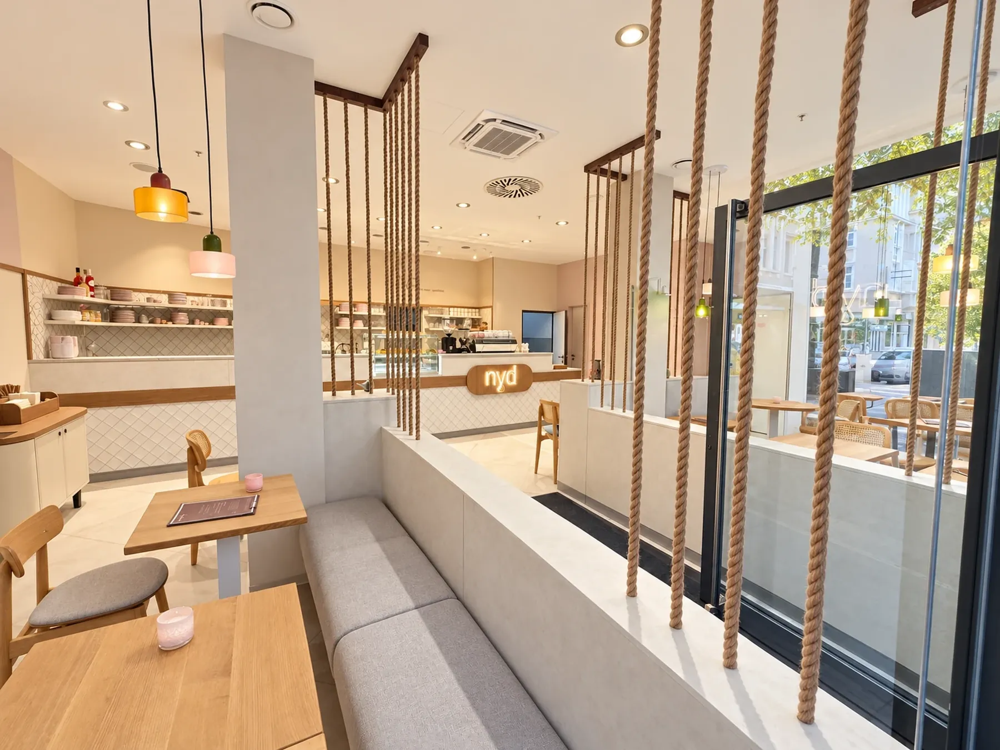
Café nyd · Osnabrück · Große Straße
Nyd ist dänisch
für genießen.
Draußen die Fußgängerzone, drinnen beginnt die Pause.
Auf dem Tisch
Setz dich.
Wir decken auf.
- Cappuccinomit Herz im Schaum
- Ube Vanille Lattelila, cremig, unser Highlight
- Karottenkuchensaftig, mit Frischkäse-Topping
- Açaí-Bowlmit Granola und frischen Beeren
Guten Appetit.
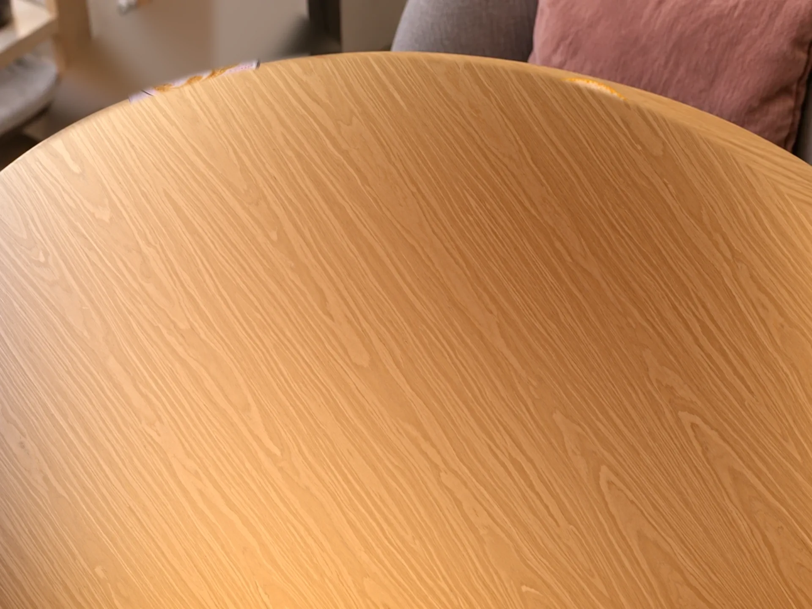
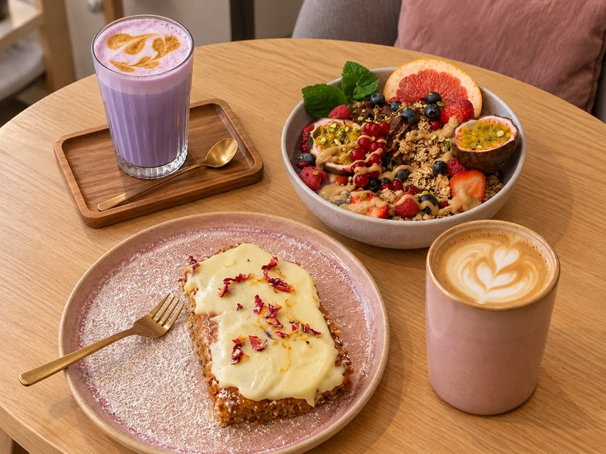
Rundgang
Schau dich
in Ruhe um.
Helles Holz, weiche Kissen, warmes Licht. Und Teller, die Lust auf langes Bleiben machen.
Weiter scrollenZur Seite wischen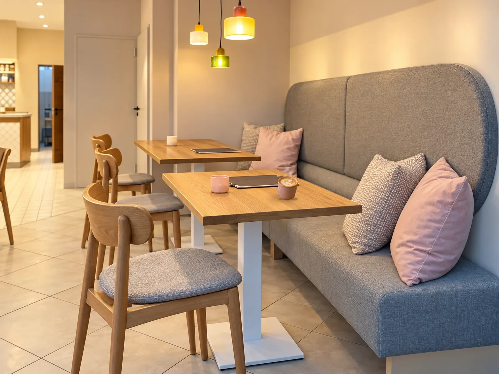
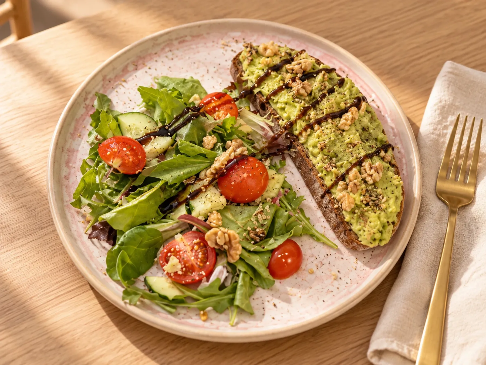
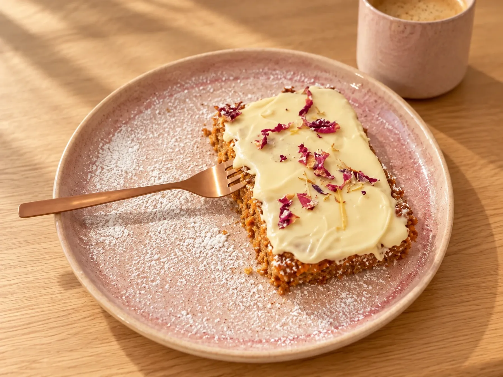
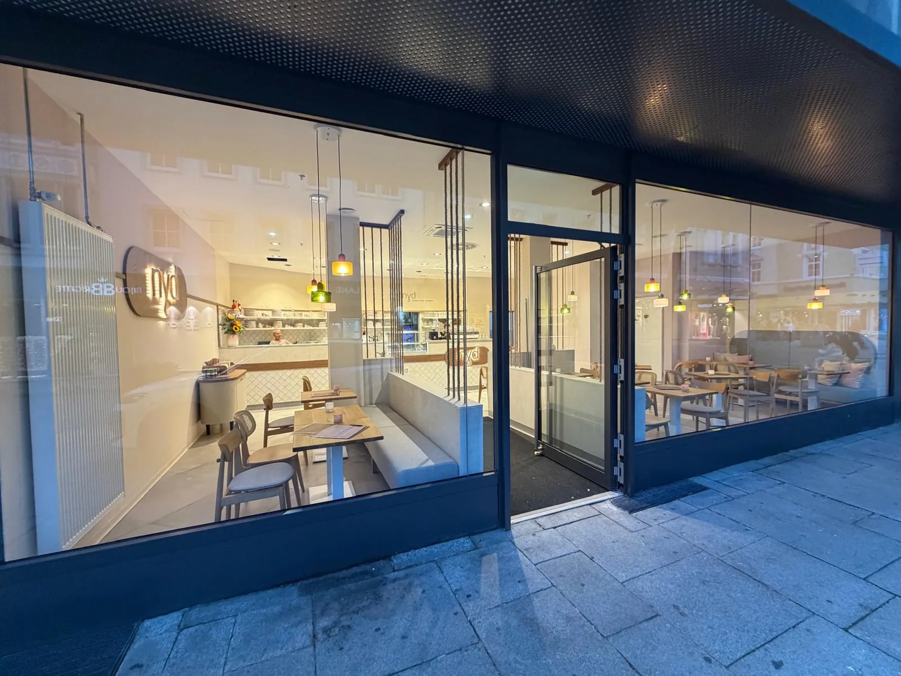
Das lila Highlight
Ube.
Sprich: „u-be“. Eine lila Knolle von den Philippinen und der Star auf unserer Karte. Woher kommt sie, warum ist sie so lila und wie schmeckt sie? In vier Schritten bis ins Glas.
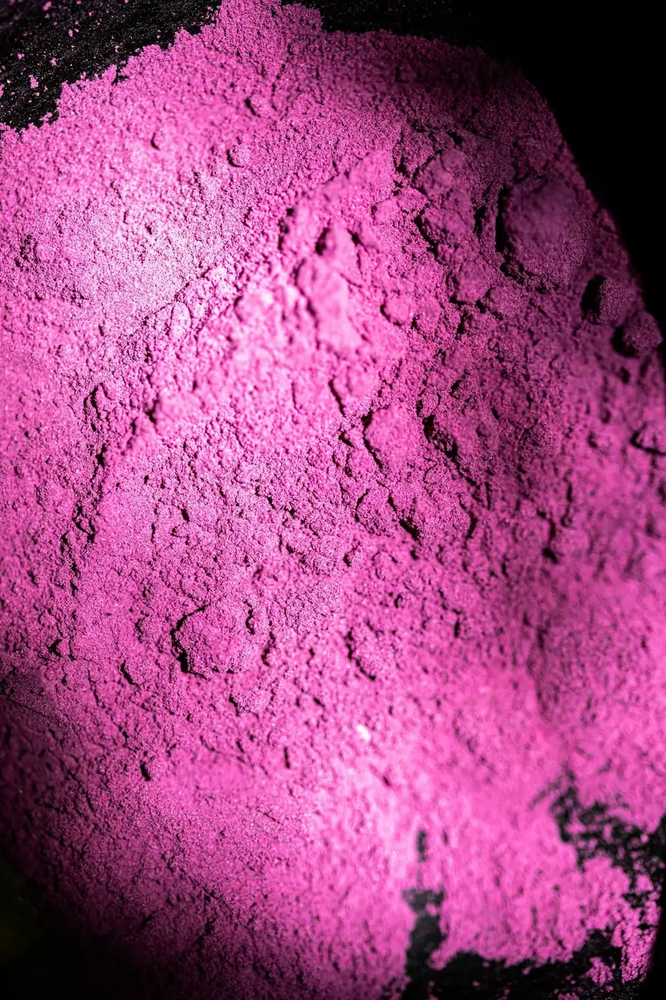
Getrocknet und gemahlen: Ube-Pulver 01Eine Knolle.
Ube ist die lila Yamswurzel, botanisch Dioscorea alata. Keine Süßkartoffel und kein Taro, sondern eine eigene Pflanze. Ihre Knolle wächst unter der Erde und ist innen tief violett.
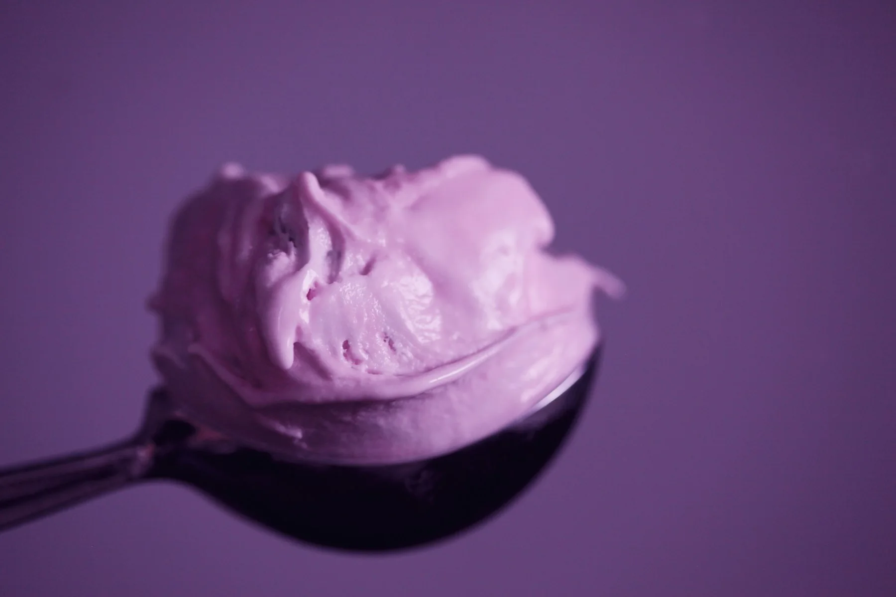
Lila Eis: so kennt man Ube auf den Philippinen 02Von den Philippinen.
Ihre Heimat ist Südostasien, vor allem die Philippinen. Dort gehört Ube seit Generationen in Eis, Cremes und Gebäck. Von dort kam sie in die Cafés der Welt.
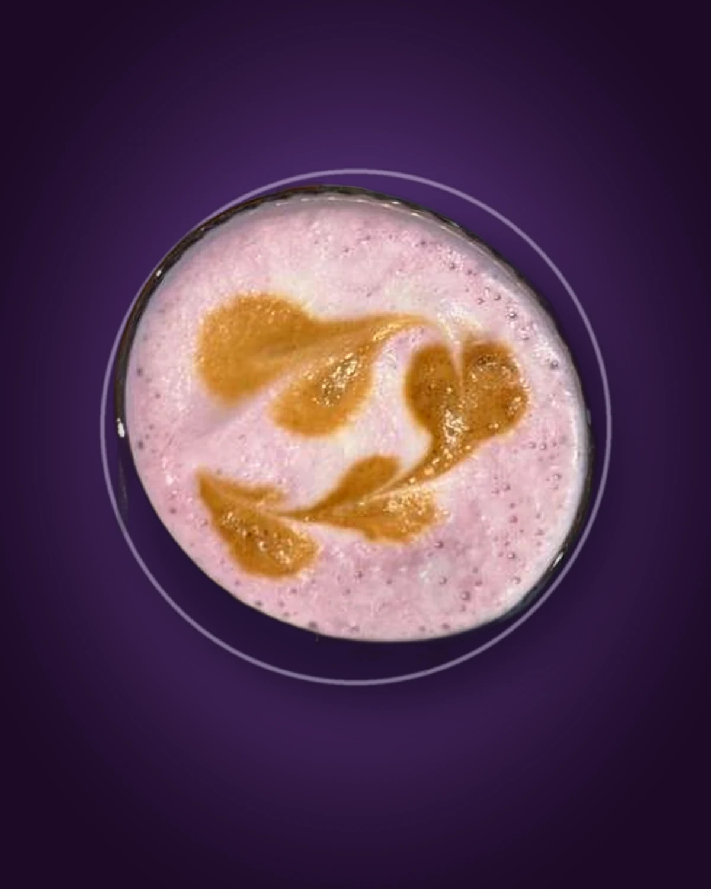
Ube Vanille Latte im Café nyd 03Natürlich lila.
Das Lila stammt von Anthocyanen. Das sind dieselben Pflanzenfarbstoffe wie in Heidelbeeren. Keine Farbe aus der Tube, sondern aus der Knolle selbst. Mit Milch aufgeschäumt wird daraus ein zartes Flieder.
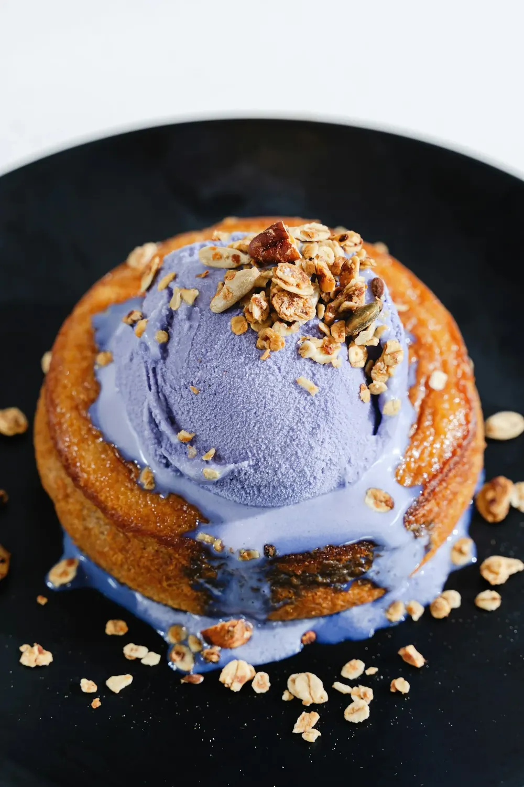
Nussig und mild süß 04Nussig, ein bisschen Vanille.
Ube schmeckt mild süß, nussig und erinnert an Vanille. Darum passt sie so gut zu Milch, Kaffee und Kuchen.
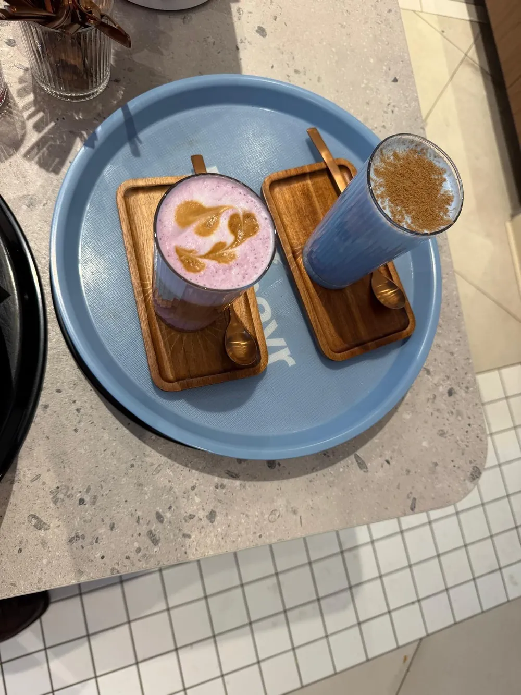
Bei uns im Glas
Ube Vanille Latteim Café nyd.
Lila, cremig, mit einem Hauch Vanille und Muster im Schaum. Warm oder auf Eis.
Bis gleich
Große Straße 27–32,Osnabrück.
- Dienstag bis Samstag
- 10–19 Uhr
- Sonntag
- 10–17 Uhr
- Montag
- Ruhetag
Letzter Halt · Die Haustür
Für Partner →Flächen, Modehäuser, Lieferanten, Presse und Jobs.
← Zurück zum Haus